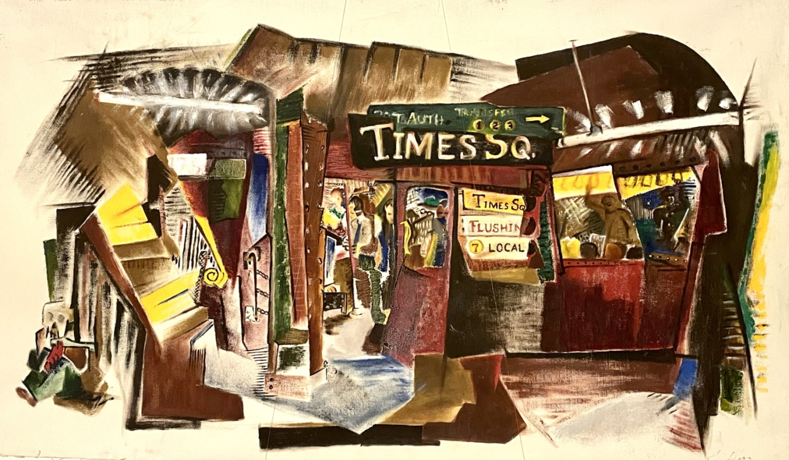
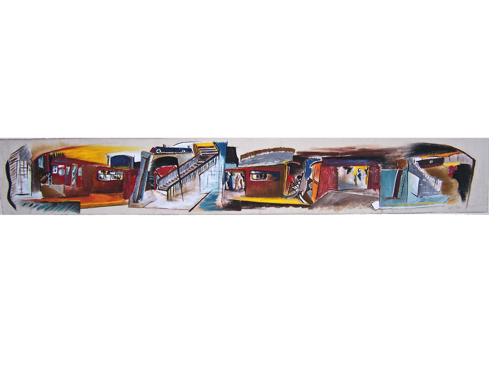
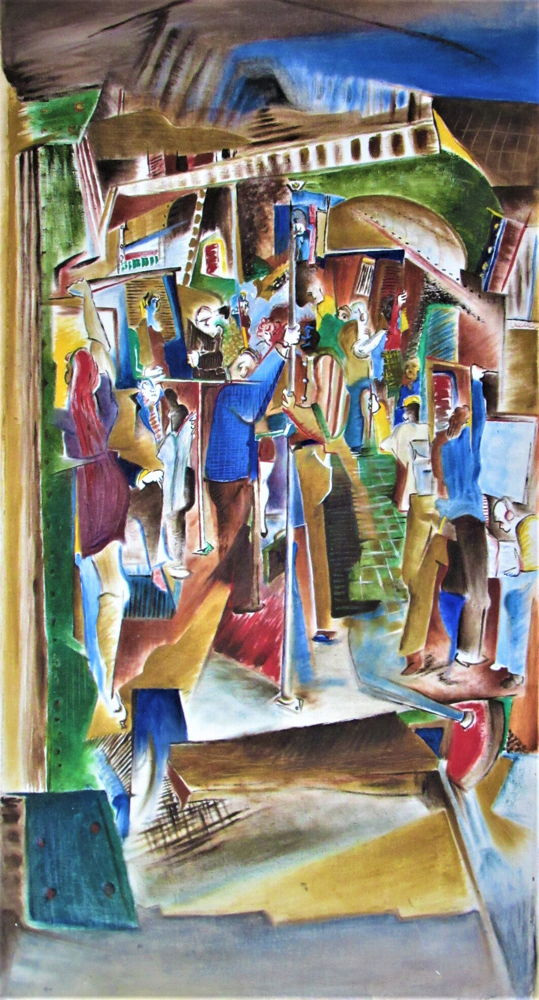

The Subway as City’s Circulatory System
The subway is New York’s beating heart—a rhythmic network pumping life through the city’s veins. Like blood cells, millions of commuters flow daily, nourishing the metropolis’s relentless energy. This symbiotic dance of steel and humanity fascinates me, becoming a recurring muse in my art.

A Labyrinth of Shared Solitude
Years navigating its tunnels have made the subway my second skin. Its labyrinth mirrors urban existence: a paradox of orderly chaos, where strangers orbit one another in silent synchrony. Here, the city’s soul is laid bare—its resilience, inequalities, and fleeting connections.
The Poetry of Crowded Silence

Five million stories cross paths underground daily. Tourists gawk, workers sigh, performers soar—yet isolation lingers like static. The subway amplifies New York’s contrasts: privilege and struggle, determination and despair, all sharing the same cramped air.

Grit and Grace in Motion
Despite its grit, the subway hums with possibility. Like a phoenix in fluorescent light, it carries the weight of dreams. My art seeks to frame these urban haikus—where hope flickers in the dark, and strangers briefly share the same breath.

Richard Diaz
Art speaks in layers—what meets the eye, how it’s crafted, why it stirs you. Peel them back like petals; the heart of the work waits beneath.